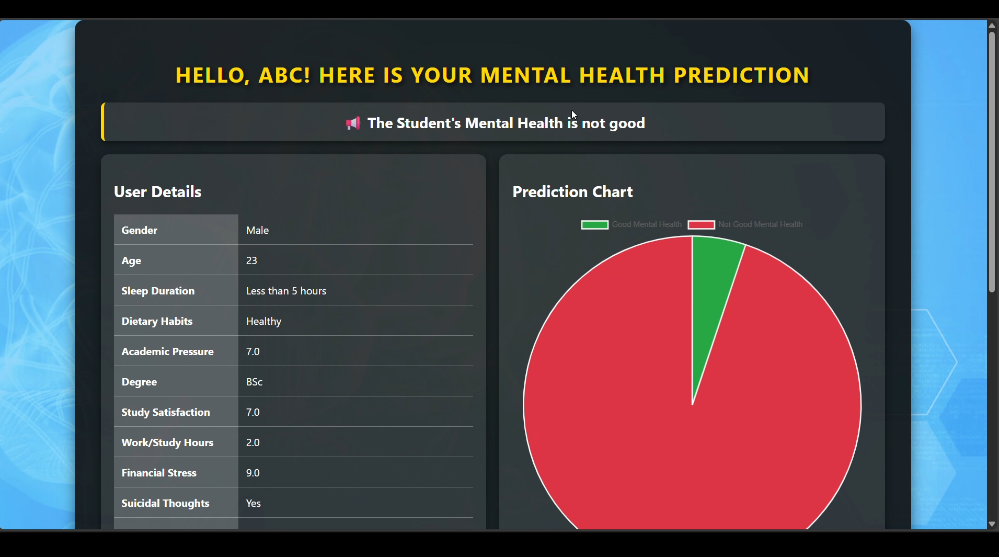

Project Description
This project focuses on identifying and predicting mental stress levels among students using a data-driven and machine learning–based approach. The system is designed to help in early detection of stress, anxiety, and academic pressure, enabling timely support and awareness.
The application is developed using Python and Flask for the backend, where data preprocessing, feature handling, and machine learning model inference take place. A trained classification model analyzes user-provided inputs such as academic workload, sleep patterns, study habits, and lifestyle factors to predict stress levels.
The frontend is built using HTML, CSS, and JavaScript to provide a clean, responsive, and user-friendly interface. The input page allows users to enter details easily, while validation ensures meaningful and accurate data submission.
During development, Exploratory Data Analysis (EDA) was performed to identify patterns, correlations, and important stress indicators. Data preprocessing techniques such as cleaning, encoding, and feature scaling were applied to improve model performance and reliability.
The result page displays predicted stress levels in a clear and understandable format, making the system accessible even to non-technical users. This project demonstrates the practical application of machine learning in healthcare and education domains.
Overall, this project showcases an end-to-end implementation of machine learning, data analysis, Flask web development, and frontend design, highlighting real-world problem-solving skills.
Initial Input Page
The user enters academic and lifestyle-related details required for stress prediction.

Prediction Result Page
The trained model predicts the stress level and displays the output clearly.
